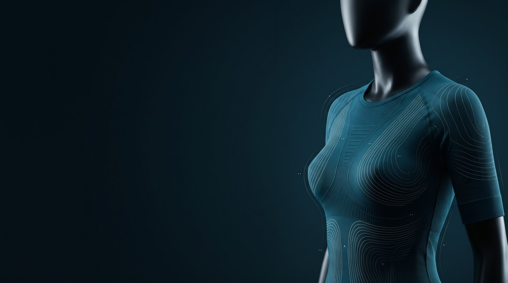
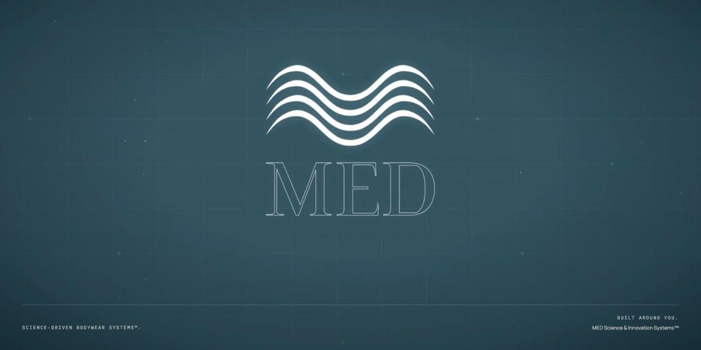

Un solo diseñador para toda el área de diseño de una marca de compresión médica que salía a nuevos mercados: marca, empaque, catálogo, redes y web en 8 semanas.

MED, una marca de compresión médica, salía a nuevos mercados con cuatro líneas de producto, distribuidores en tres países y sin un sistema de diseño detrás. Entré como único diseñador, dueño de las decisiones de marca y no solo de la ejecución.
Cada pieza tenía que funcionar en español e inglés, para médicos y distribuidores, en impreso y digital. Son prendas médicas reales, así que en cada imagen e ilustración reviso producto y anatomía contra la referencia.
Construir sistemas, no piezas sueltas. Un solo lenguaje visual (frío, clínico, premium) para marca, empaque, catálogo, redes y web, con flujos asistidos por IA para producir a escala. Los datos confidenciales no los subo a herramientas de IA.

En vivo · medsciencesystems.com ↗ · página de lanzamiento
Del 22 de septiembre al 17 de noviembre de 2026, con un solo diseñador para toda el área.
En paralelo: marca, empaque, marquillas, catálogo, redes, web, video, presentaciones y más.
Paquetes de preprensa en CMYK: 3 cajas, 6 stickers de bolsa y 2 stickers de producto.
Referencias organizadas en 7 familias, con 25 fichas técnicas en producción.
Piezas terminadas de la parrilla de noviembre, en español e inglés.
Archivos de firma de correo: 6 personas × 4 estilos × 3 tamaños.
Imágenes y clips generados con prompts estándar. Solo uso los que reviso y apruebo.
Español e inglés, para distribuidores en tres países.
| Área | Entregado |
|---|---|
| Sistema de logo | 6 versiones + edición dorada (foil y plana), avatares, favicon e ícono de app |
| Empaque | Cajas S / M / L con troqueles del proveedor + stickers de bolsa en 3 tamaños |
| Marquillas | Tallas 2XS → 7XL + marquillas de cuidado, composición y producción |
| Íconos de cuidado | Set propio (no stock), en 3 colores |
| Fichas técnicas | Sistema de fichas con infografías tipo rayos X y QR a la página del producto |
| Parrilla mensual | 8 contenidos → archivos finales en ES + EN (posts, carruseles, portadas de reel) |
| Sistema de plantillas | Plantillas de paneles para 16:9, 1:1, 4:5, 9:16 y YouTube |
| Banners de redes | 3 direcciones para LinkedIn y YouTube, 2 aprobadas |
| Sitio web | Secciones diseñadas + scroll tech-scan en Three.js + visor 3D de producto por QR |
| Presentaciones | Template de marca, lanzamiento a distribuidores, estructura de la compañía y programa de socios |
| Film y sonido | Film manifiesto de marca (20+ iteraciones), tráiler del hero, piezas de música y voz |
| Kit de distribuidores | Logos y avatares por país, kit de mapa y tula premium |
Manual de marca, arquitectura de líneas por color, reglas de logo, tipografía y un banco de micrográficos.
Cajas, stickers de bolsa, marquillas e íconos de cuidado: un diseño compartido en todos los tamaños, listo para imprenta en CMYK.
Sistema de fichas técnicas y catálogo para 44 referencias en 7 familias, con infografías tipo rayos X y QR a la página de cada producto.
Familia de plantillas en Figma para la parrilla mensual, con logos e idiomas intercambiables y carruseles continuos.
Una sección de scroll en Three.js que arma la prenda de malla a tejido, y un prototipo de visor 3D por QR que le entregué al desarrollador web.
Estructura de archivos, reglas de entrega, cotizaciones con proveedores, actualización diaria a dirección y presentaciones para distribuidores.
Yo pongo la dirección y las reglas; los flujos hacen el trabajo repetitivo.
Dirección de arte, reglas y aprobaciones: mías
Google Flow + Claude, con prompts estándar
Los datos confidenciales no van a la IA
Arte final en Illustrator / Photoshop, revisado contra la referencia
Presentados a dirección como base de todo el trabajo que sigue.
La propuesta de caja se aprobó en general; el sticker de producto se reutiliza en bolsas y cajas.
Dirección aprobó escalar el catálogo con un proceso asistido por IA que no expone los datos de producto.
Kits de identidad por país para 3 mercados y una tula premium para médicos y socios.
Dos direcciones visuales aprobadas para marca, redes y portada del catálogo.
Sin datos internos de producto: nombres, referencias y fichas están bajo NDA. El cover es un visual original dirigido con IA para este caso, no una foto de producto.